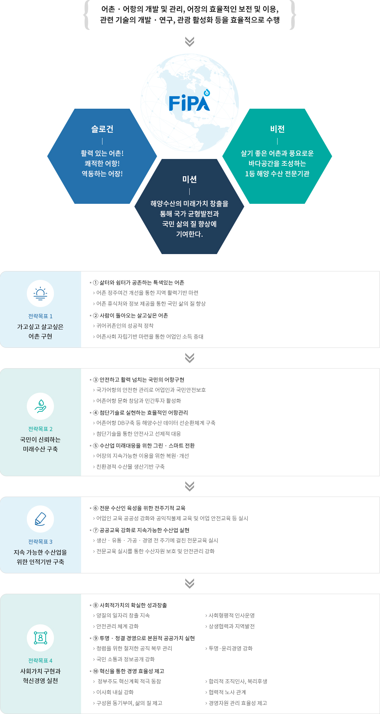
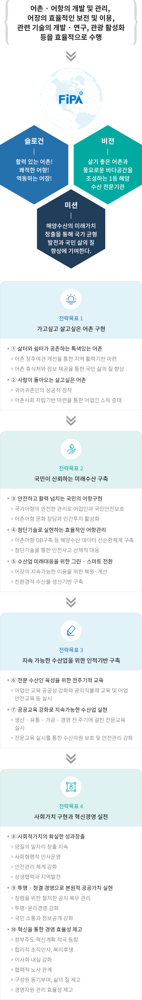

비전과 전략
- 홈
- 기관소개
- 비전과 전략


어촌 · 어항의 개발 및 관리, 어장의 효율적인 보전 및 이용, 관련 기술의 개발 · 연구, 관광 활성화 등을 효율적으로 수행
- 슬로건 - 활력 있는 어촌! 쾌적한 어항! 역동하는 어장!
- 미션 - 해양수산의 미래가치 창출을 통해 국가 균형발전과 국민 삶의 질 향상에 기여한다.
- 비전 - 살기 좋은 어촌과 풍요로운 바다공간을 조성하는 1등 해양 수산 전문기관
-
전략목표 1 가고싶고 살고싶은 어촌 구현
- ① 삶터와 쉼터가 공존하는 특색있는 어촌
- 어촌 정주여건 개선을 통한 지역 활력기반 마련
- 어촌 휴식처와 정보 제공을 통한 국민 삶의 질 향상
- ② 사람이 돌아오는 살고싶은 어촌
- 귀어귀촌인의 성공적 정착
- 어촌사회 자립기반 마련을 통한 어업인 소득 증대
- ① 삶터와 쉼터가 공존하는 특색있는 어촌
-
전략목표 2 국민이 신뢰하는 미래수산 구축
- ③ 안전하고 활력 넘치는 국민의 어항구현
- 국가어항의 안전한 관리로 어업인과 국민안전보호
- 어촌어항 문화 창담과 민간투자 활성화
- ④ 첨단기술로 실현하는 효율적인 어항관리
- 어촌어항 DB구축 등 해양수산 데이터 선순환체계 구축
- 첨단기술을 통한 안전사고 선제적 대응
- ⑤ 수산업 미래대응을 위한 그린 · 스마트 전환
- 어장의 지속가능한 이용을 위한 복원·개선
- 친환경적 수산물 생산기반 구축
- ③ 안전하고 활력 넘치는 국민의 어항구현
-
전략목표 3 지속 가능한 수산업을 위한 인적기반 구축
- ⑥ 전문 수산인 육성을 위한 전주기적 교육
- 어업인 교육 공공성 강화와 공익직불제 교육 및 어업 안전교육 등 실시
- ⑦ 공공교육 강화로 지속가능한 수산업 실현
- 생산 · 유통 · 가공 · 경영 전 주기에 걸친 전문교육 실시
- 전문교육 실시를 통한 수산자원 보호 및 안전관리 강화
- ⑥ 전문 수산인 육성을 위한 전주기적 교육
-
전략목표 4 지속 가능한 수산업을 위한 인적기반 구축
- ⑧ 사회적가치의 확실한 성과창출
- 양질의 일자리 창출 지속
- 사회형평적 인사운영
- 안전관리 체계 강화
- 상생혁력과 지역발전
- ⑨ 투명 · 청결 경영으로 본원적 공공가치 실현
- 청렴을 위한 철저한 공직 복무 관리
- 투명·윤리경영 강화
- 국민 소통과 정보공개 강화
- ⑩ 혁신을 통한 경영 효율성 제고
- 정부주도 혁신계획 적극 동참
- 합리적 조직인사, 복리후생
- 이사회 내실 강화
- 협력적 노사 관계
- 구성원 동기부여, 삶의 질 제고
- 경영자원 관리 효율성 제고
- ⑧ 사회적가치의 확실한 성과창출